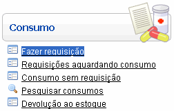
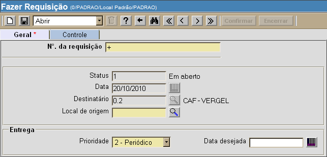
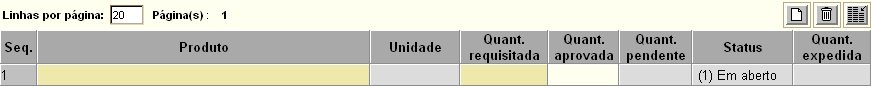
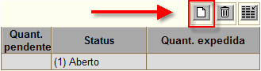

Fazer Requisição [ Voltar ]Para fazer uma requisição, clique em "Fazer Requisição" dentro do menu "Consumo". 
Ao clicar no formulário, o sistema exibirá a seguinte tela: 
Siga os passos abaixo para criar e confirmar uma requisição: 1º
Passo: informe os dados iniciais para a requisição que deseja
criar. Primeiro, especifique um local de origem no campo
de mesmo nome. Se necessário, clique no botão Observação: o campo "N°. da requisição" apresenta um sinal de mais "+" por padrão. Desta forma, assim que o registro é salvo, o sistema atribui à requisição o próximo número disponível. 2º
Passo: clique no botão 
 4º Passo: após especificar todos os produtos e quantidades, clique no botão  para
salvar os dados inseridos. para
salvar os dados inseridos.
5º
Passo: se todos os dados inseridos estiverem corretos, clique no
botão
|
 [Procurar] para
selecioná-lo a partir de uma listagem contendo os locais cadastrados.
No campo "
[Procurar] para
selecioná-lo a partir de uma listagem contendo os locais cadastrados.
No campo " [Novo]
da grade para criar novas linhas.
[Novo]
da grade para criar novas linhas. para
concluir a requisição.
para
concluir a requisição.  [Encerrar].
[Encerrar].